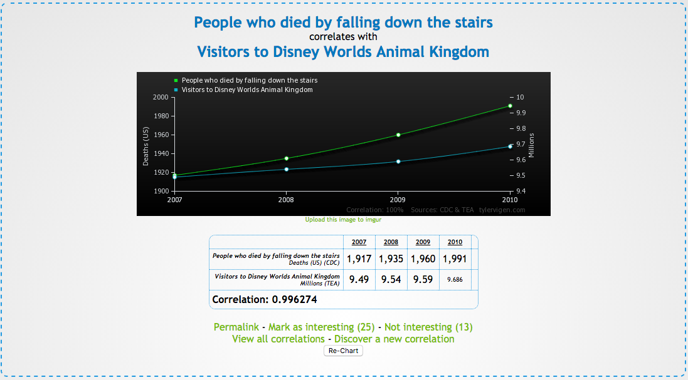
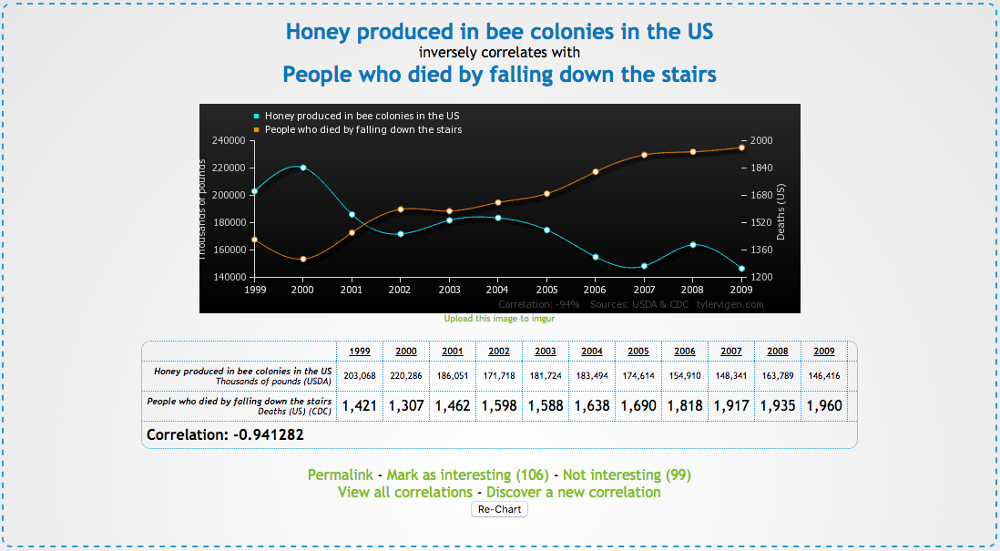
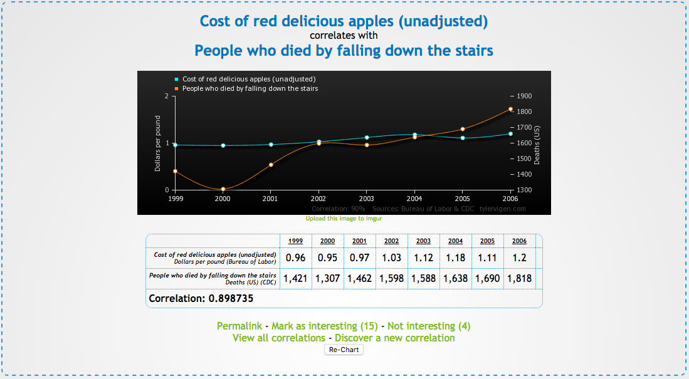
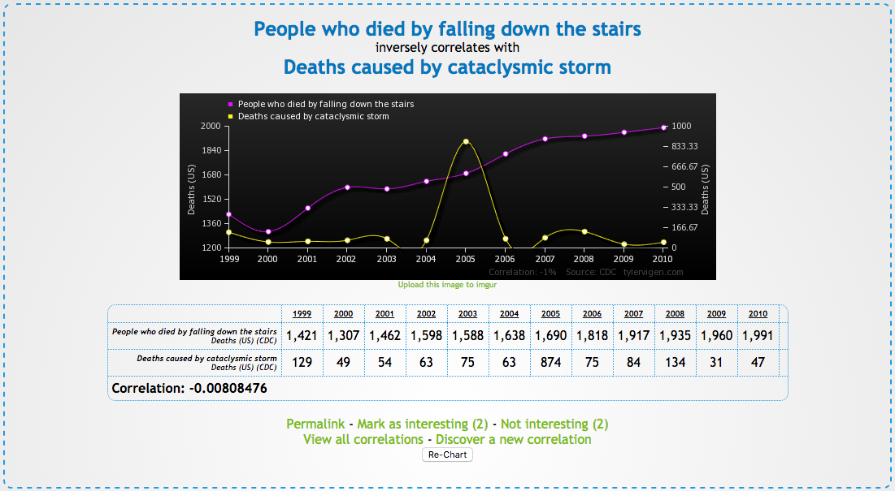

Correlations between Death by falling down stairs and various other things
Correlation between Death by falling down stairs and visiting Disney Animal Kingdom

There is a very strong correlation between these two items
Correlation between honey and death by falling down the stairs

There is a strong negative correlation between these two items
Correlation between the cost of Red Delicious apples and death by falling down the stairs

This correlation is strong
Correlation between death by catacylsmic storm and death by falling down the stairs

There is no correlation here
Conclusion: Greedy Apple Farmers Are Killing the Bees!!
Interested in some other intersting correlations, visit this page
all images and facts pulled from: TylerVigen.com